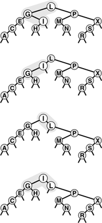
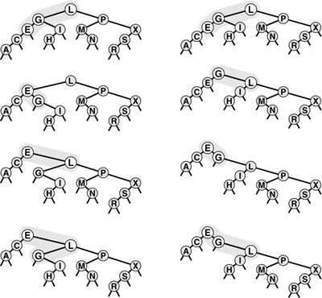
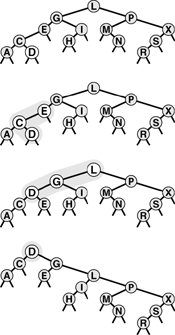
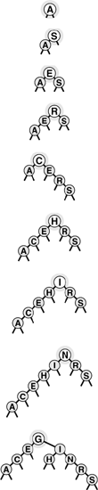
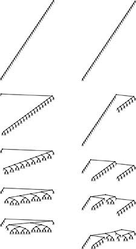

C++ Programming Robert Sedgewick - Princeton University Addison Wesley Professional Algorithms in C++, Parts 1–4: Fundamentals, Data Structure, Sorting, Searching, Third Edition
13.2. Splay BSTs
In the root-insertion method of Section 12.8, we accomplished our primary objective of bringing the newly inserted node to the root of the tree by using left and right rotations. In this section, we examine how we can modify root insertion such that the rotations balance the tree in a certain sense, as well.
Rather than considering (recursively) the single rotation that brings the newly inserted node to the top of the tree, we consider the two rotations that bring the node from a position as one of the grandchildren of the root up to the top of the tree. First, we perform one rotation to bring the node to be a child of the root. Then, we perform another rotation to bring it to the root. There are two essentially different cases, depending on whether or not the two links from the root to the node being inserted are oriented in the same way. Figure 13.5 shows the case where the orientations are different; the left part of Figure 13.6 shows the case where the orientations are the same. Splay BSTs are based on the observation that there is an alternative way to proceed when the links from the root to the node being inserted are oriented in the same way: Simply perform two rotations at the root, as shown at the right in Figure 13.6.
In this sample tree (top), a left rotation at G followed by a right rotation at L brings I to the root (bottom). These rotations might complete a standard or splay BST root-insertion process.

We have two options when both links in a double rotation are oriented in the same direction. With the standard root insertion method, we perform the lower rotation first (left); with splay insertion, we perform the higher rotation first (right).

Splay insertion brings newly inserted nodes to the root using the transformations shown in Figure 13.5 (standard root insertion when the links from the root to the grandchild on the search path have different orientation) and on the right in Figure 13.6 (two rotations at the root when the links from the root to the grandchild on the search path have the same orientation). The BSTs built in this way are splay BSTs. Program 13.5 is a recursive implementation of splay insertion; Figure 13.7 depicts an example of a single insertion, and Figure 13.8 shows the construction process for a sample tree. The difference between splay insertion and standard root insertion may seem inconsequential, but it is quite significant: the splay operation eliminates the quadratic worst case that is the primary liability of standard BSTs.
This figure depicts the result (bottom) of inserting a record with key D into the sample tree at top, using splay root insertion. In this case, the insertion process consists of a left-right double rotation followed by a right-right double rotation (from the top).

This sequence depicts the insertion of records with keys A S E R C H I N G into an initially empty tree using splay insertion.

Property 13.4. The number of comparisons used when a splay BST is built from N insertions into an initially empty tree is O(N lg N)|
This bound is a consequence of Property 13.5, a stronger property that we will consider shortly.
|
The constant implied in the O-notation is 3. For example, it always takes less than 5 million comparisons to build a BST of 100,000 nodes using splay insertion. This result does not guarantee that the resulting search tree will be well-balanced, and does not guarantee that each operation will be efficient, but the implied guarantee on the total running time is significant, and the actual running time that we observe in practice is likely to be lower still.
Program 13.5. Splay insertion in BSTs|
This function differs from the root insertion algorithm of Program 12.13 in just one essential detail: If the search path goes left-left or right-right, the node is brought to the root with a double rotation from the top, rather than from the bottom (see Figure 13.6).
The program checks the four possibilities for two steps of the search path from the root and performs the appropriate rotations:
left-left: | Rotate right at the root twice. | left-right: | Rotate left at the left child, then right at the root. | right-right: | Rotate left at the root twice. | right-left: | Rotate right at the right child, then left at the root. |
private:
void splay(link& h, Item x)
{
if (h == 0)
{ h = new node(x, 0, 0, 1); return; }
if (x.key() < h->item.key())
{ link& hl = h->l; int N = h->N;
if (hl == 0)
{ h = new node(x, 0, h, N+1); return; }
if (x.key() < hl->item.key())
{ splay(hl->l, x); rotR(h); }
else { splay(hl->r, x); rotL(hl); }
rotR(h);
}
else
{ link &hr = h->r; int N = h->N;
if (hr == 0)
{ h = new node(x, h, 0, N+1); return; }
if (hr->item.key() < x.key())
{ splay(hr->r, x); rotL(h); }
else { splay(hr->l, x); rotR(hr); }
rotL(h);
}
}
public:
void insert(Item item)
{ splay(head, item); }
|
When we insert a node into a BST using splay insertion, we not only bring that node to the root, but also bring the other nodes that we encounter (on the search path) closer to the root. Precisely, the rotations that we perform cut in half the distance from the root to any node that we encounter. This property also holds if we implement the search operation such that it performs the splay transformations during the search. Some paths in the trees do get longer: If we do not access nodes on those paths, that effect is of no consequence to us. If we do access nodes on a long path, it becomes one-half as long after we do so; thus, no one path can build up high costs.
Property 13.5. The number of comparisons required for any sequence of M insert or search operations in an N-node splay BST is O((N + M)lg(N + M))|
The proof of this result, by Sleator and Tarjan in 1985, is a classic example of amortized analysis of algorithms (see reference section). We will examine it in detail in Part 8.
|
Property 13.5 is an amortized performance guarantee: We guarantee not that each operation is efficient, but rather that the average cost of all the operations performed is efficient. This average is not a probabilistic one; rather, we are stating that the total cost is guaranteed to be low. For many applications, this kind of guarantee suffices, but it may not be adequate for some other applications. For example, we cannot provide guaranteed response times for each operation when using splay BSTs, because some operations could take linear time. If an operation does take linear time, then we are guaranteed that other operations will be that much faster, but that may be no consolation to the customer who had to wait.
The bound given in Property 13.5 is a worst-case bound on the total cost of all operations: As is typical with worst-case bounds, it may be much higher than the actual costs. The splaying operation brings recently accessed elements closer to the top of the tree; therefore, this method is attractive for search applications with nonuniform access patterns—particularly applications with a relatively small, even if slowly changing, working set of accessed items.
Figure 13.9 gives two examples that show the effectiveness of the splay-rotation operations in balancing the trees. In these figures, a degenerate tree (built via insertion of items in order of their keys) is brought into relatively good balance by a small number of search operations.
Inserting keys in sorted order into an initially empty tree using splay insertion takes only a constant number of steps per insertion, but leaves an unbalanced tree, shown at the top on the left and on the right. The sequence on the left shows the result of searching (with splaying) for the smallest, second-smallest, third-smallest, and fourth-smallest keys in the tree. Each search halves the length of the path to the search key (and most other keys in the tree). The sequence on the right shows the same worst-case starting tree being balanced by a sequence of random search hits. Each search halves the number of nodes on its path, reducing the length of search paths for many other nodes in the tree. Collectively, a small number of searches improves the tree balance substantially.

If duplicate keys are maintained in the tree, then the splay operation can cause items with keys equal to the key in a given node to fall on both sides of that node (see Exercise 13.38). This observation tells us that we cannot find all items with a given key as easily as we can for standard binary search trees. We must check for duplicates in both subtrees, or use some alternative method to work with duplicate keys, as discussed in Chapter 12.
Exercises |  13.25 Draw the splay BST that results when you insert items with the keys E A S Y Q U T I O N in that order into an initially empty tree, using splay insertion. 13.25 Draw the splay BST that results when you insert items with the keys E A S Y Q U T I O N in that order into an initially empty tree, using splay insertion.
| | 13.26 How many tree links must be changed for a double rotation? How many are actually changed for each of the double rotations in Program 13.5? | | 13.27 Add an implementation of search, with splaying, to Program 13.5. | |  13.28 Implement a nonrecursive version of the splay insertion function in Program 13.5. 13.28 Implement a nonrecursive version of the splay insertion function in Program 13.5.
| | 13.29 Use your driver program from Exercise 12.30 to determine the effectiveness of splay BSTs as self-organizing search structures by comparing them with standard BSTs for the search query distributions defined in Exercises 12.31 and 12.32. | | 13.30 Draw all the structurally different BSTs that can result when you insert N keys into an initially empty tree using splay insertion, for 2 N 7. N 7. | |  13.31 Find the probability that each of the trees in Exercise 13.30 is the result of inserting N random distinct elements into an intially empty tree. 13.31 Find the probability that each of the trees in Exercise 13.30 is the result of inserting N random distinct elements into an intially empty tree.
| | 13.32 Run empirical studies to compute the average and standard deviation of the number of comparisons used for search hits and for search misses in a BST built by insertion of N random keys into an initially empty tree with splay insertion, for N = 103, 104, 105, and 106. You do not need to do any searches: Just build the trees and compute their path lengths. Are splay BSTs more nearly balanced than random BSTs, less so, or the same? | | 13.33 Extend your program for Exercise 13.32 to do N random searches (they most likely will be misses) with splaying in each tree constructed. How does splaying affect the average number of comparisons for a search miss? | | 13.34 Instrument your programs for Exercises 13.32 and 13.33 to measure running time, rather than just to count comparisons. Run the same experiments. Explain any changes in the conclusions that you draw from the empirical results. | | | | 13.35 Compare splay BSTs with standard BSTs for the task of building an index from a piece of real-world text that has at least 1 million characters. Measure the time taken to build the index and the average path lengths in the BSTs. | | 13.36 Empirically determine the average number of comparisons for search hits in a splay BST built by inserting random keys, for N = 103, 104, 105, and 106. | | 13.37 Run empirical studies to test the idea of using splay insertion, instead of standard root insertion, for randomized BSTs. | | 13.38 Draw the splay BST that results when you insert items with the keys 0 0 0 0 0 0 0 0 0 0 0 0 1 in that order into an initially empty tree. |
|